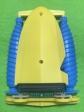

| ツインドリル"ジェットモグラ号"「テストプログラム」と「QA集」 |

| テストプログラム |
テストプログラム１ 「 Aボタンで右前後、Bボタンで左前後」
| QA集 |
Q1.回転するが前に進まない
A1.起毛の少ないカーペット(事務所のカーペット)や平らに広げたTシャツの上で実験してください。プチプチの凸側、フェルト生地、ネル生地もお試しください。
Q2.砂場や水の上で遊びたい
A2.精密歯車が砂を噛む恐れがあります。砂場での実験は避けてください。
micro:bitやモータードライブ基板は防水処理しておりません。発熱→破壊の恐れがありますので、水の上での実験も避けてください。
Q3:micro:bitにハートマークが出ない
A3:テストプログラムの書き替えに失敗した可能性があります。上記手順＜テストプログラムの入手とmicro:bitへの書き込み方法＞で再度書き換えを行ってください。
「編集」は紫色のアイコンです。コネクタの差し込みも再度ご確認ください。

Q4.思った方向に動かない
A4.左右のドリル(RとL)を確認してください。RとLの刻印が見にくい場合、上の写真を参考にドリル(ラセンの向き)を合わせてください。
Q5.テストプログラムを見ると、動作の切り替える度に「停止」が入ってます。なぜですか？
A5.例えば「前進」から一気に「後退」に切り替えると、一瞬4倍の電力がかかることになります。モーター、電池、歯車等の寿命を短くするばかりでなく、ドライバーICの損傷にもつながります。
適宜「停止」を入れてハードウエアに優しいプログラムを組んでください。
Q6.micro:bitをUSBケーブルでPCにつないだ状態で、モーターが回ることがあります。大丈夫ですか？
A6.モーターの効率が高いため、漏れ電流で回ることがあります。
書き換えは、必ず micro:bit をコネクタから外して「単体」で行ってください。
Q7.回転が重い
A7.取り扱い説明書「保守点検とグリスアップ」に従ってオーバーホールしてください。念のため新しい電池で確認してください。
Q8.カバー止めネジが硬い
A8.本体単体で、あらかじめネジを通しなじませてから、カバーをネジ締めしてください。なお、ビット(先端)のしっかりしたドライバー(JIS No1)をお使いください。
Q9.電池ボックスが熱い
A9.すぐに電池を取り出し、メールでお問い合わせください。
ureely[at]gmail.com
Q10.部品不足
A10.不足の部品名と、お送り先の住所、お名前、電話番号をメールでお知らせください。発送手配させていただきます。
ureely[at]gmail.com
Q11.micro:bit動作不具合の可能性
A11.micro:bitの購入先にお問い合わせください。
Q12.「ツインドリル"ジェットモグラ号"」を購入したい
A12.こちらからお求めください。https://www.switch-science.com/
※[at]は@に置き換えて下さい
2019.07.22更新